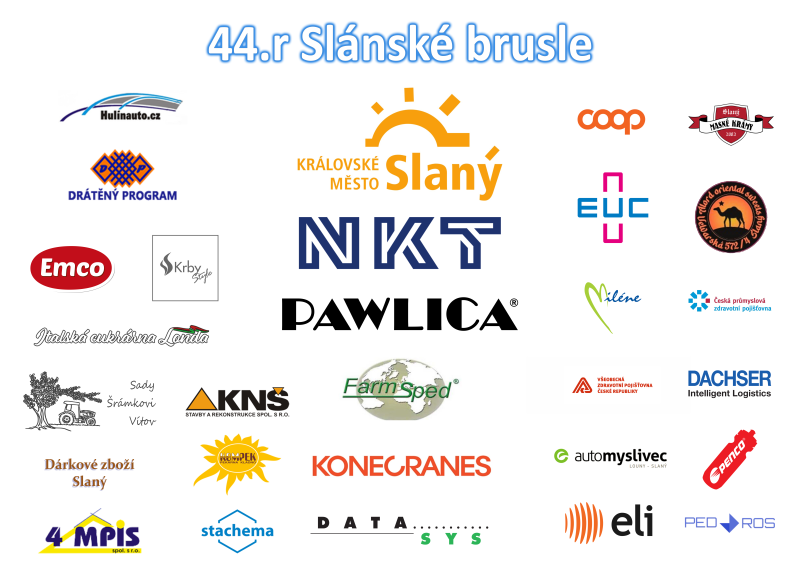

Závod Slánská brusle se uskutečnil 22. 11. 2025. Bylo k vidění 166 závodníků ve 13 kategoriích.
Závod by se nemohl konat bez těchto partnerů – děkujeme!

Závod Slánská brusle se uskutečnil 22. 11. 2025. Bylo k vidění 166 závodníků ve 13 kategoriích.
Závod by se nemohl konat bez těchto partnerů – děkujeme!

Výsledky novějších ročníků jsou na stránkách ČKS.